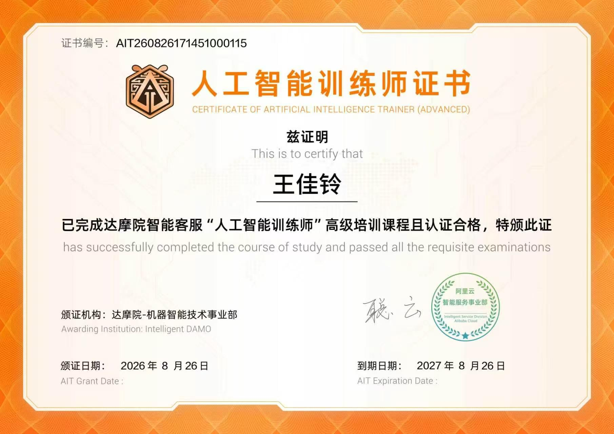

N.01
行程规划
2025 · 实践
用 AI 规划一场说走就走的旅行
通过多轮对话让 AI 综合预算、天气、交通与个人偏好，生成可落地的每日行程表； 再用表格工具二次校验，最终产出一版"比攻略网站更懂我"的定制路线。
Prompt 设计 · 信息校验 · 工具协同
Résumé / 个人简历
首都经济贸易大学 · 广告学（本科在读）
让 AI 有温度，让文字有力量。▌
广告学子 × 认证 AI 训练师。擅长用文字记录世界， 也热衷于用人工智能解决真实生活里的问题——兼具人文素养与极客精神。

About / 01
作为广告学专业的学生，我具备出色的文字功底、信息检索与内容策划能力。 不仅拥有初级和高级人工智能训练师认证， 还能熟练运用 Python 与 AI 工具解决实际问题——旅行规划、情绪疏导、小游戏开发都不在话下。 在过往经历中，无论是担任班级职务、参与大型志愿服务，还是在烘焙坊的基层兼职， 我都做到了尽职尽责、细致入微。我热衷跨界探索，期待在实习岗位上发挥综合优势。
0项
AI 训练师认证
0+
各级奖项荣誉
0km
远足徒步纪录
AI Notes / 02
这是我最与众不同的地方——我不只"会用"AI，更喜欢记录用它解决真实问题的过程。
通过多轮对话让 AI 综合预算、天气、交通与个人偏好，生成可落地的每日行程表； 再用表格工具二次校验，最终产出一版"比攻略网站更懂我"的定制路线。
Prompt 设计 · 信息校验 · 工具协同
结合广告学的消费者洞察与共情视角，设计了一套"情绪疏导提示词"， 让 AI 先倾听、再提问、最后给出认知行为层面的建议——技术也可以很温柔。
共情设计 · 心理学视角 · 人文关怀
从"完全不会写代码"到用 AI 结对编程做出可玩的小游戏， 再到亲手搭建这份在线简历——你正在浏览的页面，就是这条笔记的成果。
试玩小游戏Portfolio / 03
镜头里的光影与人间烟火，点击可放大浏览。


校心理治愈漫画创作大赛一等奖作品。 用四格漫画讲述一只白猫与低落少年相互治愈的故事—— 我相信艺术可以表达情感、传递治愈力量。

已完成达摩院智能客服「人工智能训练师」高级培训课程且认证合格。 颁证机构：达摩院-机器智能技术事业部，2026 年 8 月颁证。点击证书可放大查看。

Experience / 04
2026.09 — 至今
本科在读。系统训练广告策划、内容创作与传播学理论， 同时自学 AI 工具与 Python，探索"人文 × 技术"的交叉地带。
2026.09 — 至今
加入创业发展协会，参与社团内容与运营实践， 在真实场景中锻炼内容策划、协作执行与数据复盘意识。
兼职实践
负责面包、蛋糕、月饼等产品的制作与售卖，在快节奏环境中保持高效产出， 锻炼了良好的客户服务意识、抗压能力与严谨的实操规范。
志愿服务
参与校庆筹备与现场执行，负责来宾接待与秩序维护； 中考期间为学弟学妹提供考场指引与心理疏导， 展现了同理心、沟通能力与大型活动应急处理能力。
公益环保
荣获"腾讯九九公益先进个人"；在废品回收活动中负责关键材料统筹、 发挥核心作用，培养了环保意识与项目管理能力。
校园干部
历任英语课代表、历史课代表、劳动委员、小组组长。 作为劳动委员统筹操场及环山跑道卫生打扫并获评"优秀劳动委员"； 作为课代表负责作业辅导与师生沟通，锻炼了领导力与协作能力。
思辨表达
围绕"幸福与压力""金钱与热爱"等社会热点议题展开深度思考与逻辑推演， 提升了批判性思维与公众演讲能力。
Skills / 05
Honors / 06
奖项不少，折叠收纳——点击展开查看。